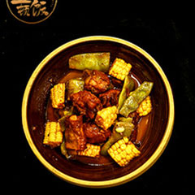

<ion-header>
  <ion-navbar>
    <ion-title >
      菜谱大全
    </ion-title>
  </ion-navbar>
  <ion-toolbar no-border-top>
    <ion-segment [(ngModel)]="cookbookModel">
      <ion-segment-button value="jia" class="segmentCss" >
        家常菜谱
      </ion-segment-button>
      <ion-segment-button value="zhong">
        中华美食
      </ion-segment-button>
      <ion-segment-button value="wai">
        外国料理
      </ion-segment-button>
      <ion-segment-button value="hong">
        烘焙
      </ion-segment-button>
    </ion-segment>
  </ion-toolbar>
</ion-header>

<ion-content padding (swipe)="swipeEvent($event)">
  <div [ngSwitch]="cookbookModel">
    <ion-list *ngSwitchCase="'jia'">
      <ion-item no-lines>
        家常菜 <ion-icon name="arrow-forward"></ion-icon>
      </ion-item>
      <ion-card (click)="itemSelected()">
        
        <ion-card-content>
          <ion-card-title>
            排骨炖豆角
          </ion-card-title>
        </ion-card-content>
      </ion-card>
    </ion-list>

    <ion-list *ngSwitchCase="'zhong'">
      <ion-item>
        <h2>粤菜</h2>
      </ion-item>
    </ion-list>

    <ion-list *ngSwitchCase="'wai'">
      <ion-item>
        <h2>韩国料理</h2>
      </ion-item>
    </ion-list>

    <ion-list *ngSwitchCase="'hong'">
      <ion-item>
        <h2>蛋糕面包</h2>
      </ion-item>
    </ion-list>
  </div>
</ion-content>
